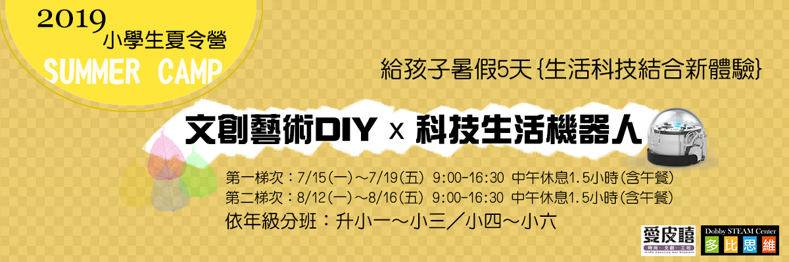
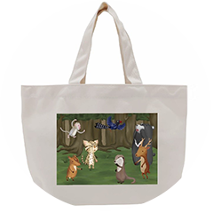
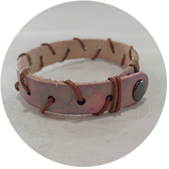
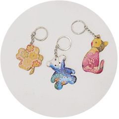
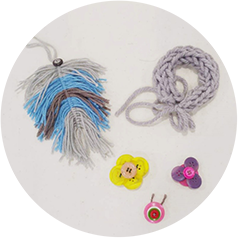
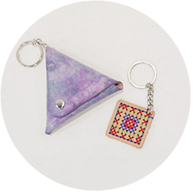
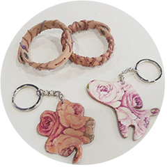
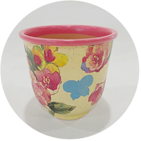
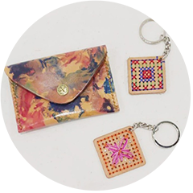

【2019夏令營】文創藝術DIY x 科技生活機器人
我要報名

[課程內容] 挑戰班：升小一~小三
| 日期 | 第一天 | 第二天 | 第三天 | 第四天 | 第五天 |
|---|---|---|---|---|---|
| 上午時間 9:00 | 12:00 |
 |
 |
 |
 |
 |
| 下午時間 13:30 | 16:30 |
[課程內容] 進階班：升小四~小六
| 日期 | 第一天 | 第二天 | 第三天 | 第四天 | 第五天 |
|---|---|---|---|---|---|
| 上午時間 9:00 | 12:00 |
用蠟線在皮手環上構圖出自己想像中的圖樣，製作有趣又特別的裝飾皮手環。 剪剪貼貼動手做，用有趣的蝶谷巴特技法在鑰匙圈上做出漂亮的圖樣。 |
用蝶谷巴特做在花盆上，在剪剪貼貼當中讓孩子了解立體面上的構圖方式與比例，在學習有趣的技法之餘，也能了解立面空間的概念!!! |
運用中國傳統十字繡技法改良出簡單可做出的十字繡皮飾鑰匙圈，讓孩子學習運用線在平面上構圖的邏輯，促進學童的左腦思考發展。 |
|
|
| 下午時間 13:30 | 16:30 |
【招生資訊】
時間：
[第一梯] 7/15(一)~7/19(五) 9:00-16:30 中午休息1.5小時(含午餐)
[第二梯] 8/12(一)~8/16(五) 9:00-16:30 中午休息1.5小時(含午餐)
地點：
台北市三重區光復路一段61巷27號4樓 (愛皮嘻時尚文創工坊)
課程費用：
挑戰班 $7,800 (升小一~小三)進階班 $8,800 (升小四~小六)
[備註]
6人以上開班，若人數不足將保留開課與否權利